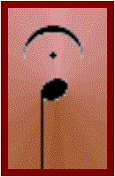

El calderón es un signo de prolongación que colocado encima (generalmente) de una nota alarga su duración. Consiste en un semicírculo con un punto dentro.No tiene un tiempo determinado, eso dependerá del interprete, pero aproximadamente suele aumentar dos tercios o tres cuartos del valor de la nota que acompaña, en realidad lo que se pretende es mantener la nota frenando el ritmo de la canción. Puede servir para frenar el final de la obra o para crear un pequeño suspense sobre la parte que le sigue. Lo que es cierto es que casi siempre lo encontraremos en la última parte de un compás colocado al final de una obra o de un fragmento melódico.
No se extrañen si alguna vez lo encuentran encima de una línea divisoria, querrá que separemos el compás anterior del siguiente por un momento.